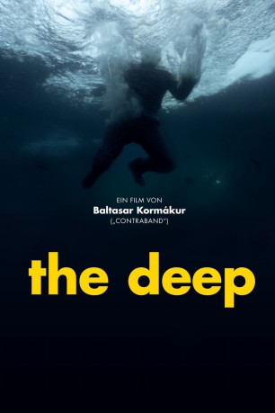

#3912 The Deep
 
 IMDB-Wertung: 6.7 / 10
IMDB-Wertung: 6.7 / 10  Metascore: 0
Metascore: 0 
Die Nordsee vor Islands Küste im Winter 1984: Es sollte eine Ausfahrt wie immer werden für einen Fischkutter und es wurde die letzte. Kurz vor den für ihre felsigen Gewässer bekannten Westmännerinseln verhakt sich das Schleppnetz im Untergrund und bringt das Schiff zum Kentern. Ein Teil der Mannschaft ertrinkt direkt. Den anderen steht ein Tod durch Unterkühlung in den eisigen Fluten bevor. Doch wie durch ein Wunder erreicht Crew-Mitglied Gulli (Ólafur Darri Ólafsson) das rettende Ufer. Als einziger Überlebender sieht er sich mit einer zweifelhaften Gnade konfrontiert.
Jahr: 2012
Dauer: 89 Minuten
FSK: 12
Land: Island Studio: MFA FilmdistributionTonspuren:
Untertitel:
Auflösung: 1080p (1920x800) Größe: 3235 MB
Genre: Action, Drama
Regisseur: Baltasar Kormákur
Drehbuch: Kevin Williamson
Soundtrack:
Darsteller:
 Ólafur Darri Ólafsson als Gulli
Ólafur Darri Ólafsson als Gulli- Joi Johannsson als Palli
- Stefán Hallur Stefánsson als Jón
- Björn Thors als Hannes
 Þorsteinn Bachmann als Prestur
Þorsteinn Bachmann als Prestur Sveinn Ólafur Gunnarsson als Radio Operator
Sveinn Ólafur Gunnarsson als Radio Operator- Þröstur Leó Gunnarsson als Lárus
- Walter Grímsson als Raggi
- Thora Bjorg Helga als Halla
- Guðjón Pedersen als Erlingur Prófessor
- Theodór Júlíusson als Foreldrar Gulli
- María Sigurðardóttir als Foreldrar Gulli
- Stormur J.K. Baltarsarsson als Batman - Bjarni
- Martin Halldórsson als Spæderman - Gilli
- Sindri Árdal Bergsteinssoon als Gulli, Sem Dreengur
- Ólafur Ingi Sigurðsson als Palli, Sem Drengur
- Terry Gunnell als Scientist
- Íris Hund Þórarinsdóttir als Hún
- Harald G. Haraldsson als Sýslumadur
- María Reyndal als
- Þrúður Vilhjálmsdóttir als Nurse
- Rúnar Guðbrandsson als Coast Guard Captain
- Bjartur Guðmundsson als Coast Guard
- Þorvaldur Ottðsson als
- Kristján Franklin Magnúss als TV Reporter
- Haraldur Jónsson als
- Bergur Þór Ingólfsson als
- Björn Ingi Hilmarsson als
- Pálmi Kormákur Baltasarsson als
- Jim Goulden als
- Ivar Isak Guðjónsson als
- Sveinbjörn Sveinbjörnsson als
- Baltasar Breki Samper als
- Hjortur Gretarsson als
- Davíð Örn Arnarson als
- Tanja Berglind Hallvarðsdóttir als
- Ásta Júlía Guðjónsdóttir als
- Sigriður Ólafsdóttir-Sussa als
- Fjóla Hersteinsdóttir als
- Aðalheiður Sigurjónsdóttir als
- Daði Júlíusson als
- Haraldur Ari Karlsson als
- Þuriður Kristin Kristlelfsdóttir als
- Halldór Fannar Sigurgeirsson als TV Soundman , uncredited
Datei: X:\2012(A-F)\Deep, The (2012, FSK12, 1920x800).mkv seit 30.06.2016
Festplatte: HD 2012(A-M)
 Es gibt insgesamt 102 Filme in der Gruppe '2012(A-F)'
Es gibt insgesamt 102 Filme in der Gruppe '2012(A-F)'